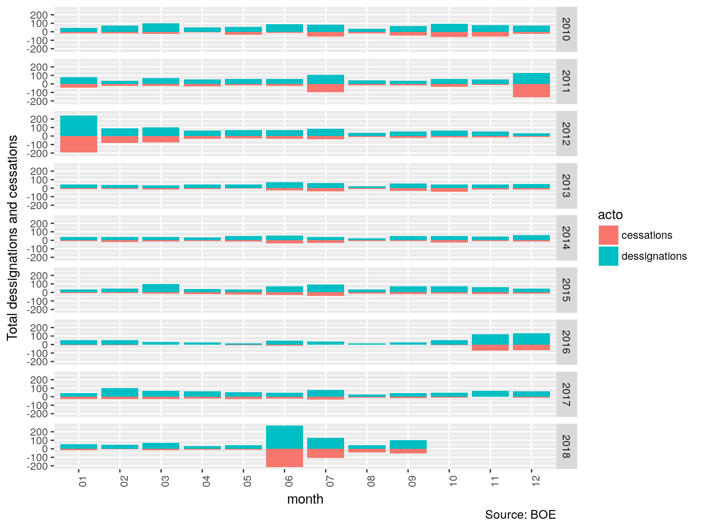

Anyone with little contact with spanish adminstration, or just with interest in politics, knows that after a major change in the party ruling the goverment goes an important amount of dessignations in the highest levels of administration.
I want to quantify this by counting the dessignations and cessations published in BOE (Official State Gazette) with R.
suppressPackageStartupMessages(library(XML))
suppressPackageStartupMessages(library(ggplot2))
suppressPackageStartupMessages(library(dplyr))
CuentaNombramientos <- function(fecha){
path <- sprintf("https://boe.es/diario_boe/xml.php?id=BOE-S-%s",fecha)
resumen_boe_xml <- XML::xmlParse(file = readLines(path))
top <- xmlRoot(resumen_boe_xml)
if (xmlValue(top[[1]][[1]])!="No se encontró el sumario original."){
nombramientos <- getNodeSet(top[[2]],"//diario//seccion[@num='2A']//departamento[@nombre!='UNIVERSIDADES']//epigrafe[@nombre='Nombramientos']//item")
ceses <- getNodeSet(top[[2]],"//diario//seccion[@num='2A']//departamento[@nombre!='UNIVERSIDADES']//epigrafe[@nombre='Ceses']//item")
return(list(nombramientos=length(nombramientos),ceses=length(ceses)))
} else {
return(list(nombramientos=0,ceses=0))
}
}
fechas <- as.character(seq(from=as.Date("2010-01-01"),to=Sys.Date(),by="1 day"),format="%Y%m%d")
nombramientos <- data.frame(fecha=fechas,nombramientos=NA,ceses=NA)
l.resultados <- purrr::map(nombramientos$fecha,CuentaNombramientos)
nombramientos$nombramientos <- bind_rows(l.resultados)$nombramientos
nombramientos$ceses <- bind_rows(l.resultados)$ceses
nombramientos$fecha <- as.Date(nombramientos$fecha,format="%Y%m%d")
nomb.mes <- nombramientos %>% dplyr::group_by(fecha=format(fecha,"%Y-%m")) %>% dplyr::summarise(dessignations=sum(nombramientos),cessations=-1*sum(ceses)) %>% dplyr::mutate(year=substr(fecha,1,4),mes=substr(fecha,6,7)) %>% tidyr::gather(key="acto",value="total",2:3)
g <- ggplot(nomb.mes) + geom_bar(aes(x=mes,y=total,fill=acto,group=acto),stat="identity") + theme(axis.text.x = element_text(angle = 90, hjust = 1)) + ylab("Total dessignations and cessations") + facet_grid(year~.) + labs(caption="Source: BOE") + xlab("month")
plot(g)
As can be seen two of these administration earthquakes ocurred in this decade, the first after general elections of 26th November 2011 when Mariano Rajoy (PP, conservative) swept out José Luis Rodríguez Zapatero (PSOE, progressive). The last one was just a few months ago when Mariano Rajoy was defeated in a motion of no confidence and removed from goverment.
This one change in spanish administration lead to four months of frantic activity of dessignatios and cessetions, with june 2018 as the most active month in this decade.